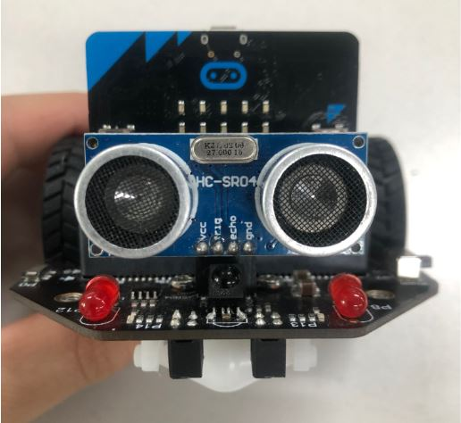
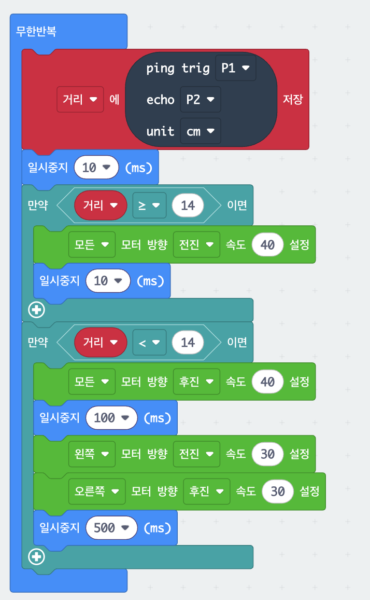

7. 자율주행 경찰차 (마퀸)
초음파로 벽을 피해 다니고, 밑면 LED로 빨강·파랑 경광등을 켜는 로봇 자동차
이 단계에서는 무엇을 만드는지 영상으로 보고, 준비물을 확인합니다.
무엇을 만드나요?
마퀸(Maqueen) 로봇 자동차가 초음파 센서로 앞쪽 거리를 재다가, 벽이 가까우면 뒤로 물러났다 오른쪽으로 돌아 스스로 피해 다닙니다. 여기에 밑면 RGB LED로 빨강·파랑 경광등을 켜면 진짜 경찰차처럼 됩니다.
"센서로 재고 → 조건문으로 판단하고 → 모터를 돌린다"는 흐름이 핵심입니다. 코드는 두 번에 나누어 만듭니다. 먼저 벽을 피하는 자율주행, 그다음 경광등을 합칩니다.
먼저 볼까요? 스스로 달리는 경찰차
영상을 보며 생각해 보기
- 마퀸은 어떻게 벽(장애물)을 알아챌까?
- 벽 앞에서 마퀸은 어떤 동작을 했을까? (멈춤? 후진? 회전?)
- 경찰차처럼 빨강/파랑 불빛이 켜지려면 무엇이 필요할까?
- 이 모든 것을 블록 몇 개로 만들 수 있어요!
준비물 (모둠당)
- micro:bit + 마퀸(Maqueen) 본체
- AA 건전지 3개, micro USB 케이블
- HC-SR04 초음파 센서 (마퀸 앞쪽 소켓에 꽂기)
- 인터넷이 되는 PC 또는 노트북
이 단계에서는 초음파 센서가 거리를 재는 방법과 핀 번호를 알아 둡니다.
초음파 센서는 어떻게 거리를 잴까?
박쥐가 어둠 속에서 날아다니는 방법과 같습니다. ① 초음파를 쏘고(Trig) ② 튕겨 돌아온 소리를 받아(Echo) ③ 걸린 시간으로 거리를 계산합니다.
거리 = 소리의 속력(약 340 m/s) × 걸린 시간 ÷ 2
2로 나누는 이유는 소리가 "갔다가 돌아오는" 왕복 시간이기 때문입니다.
이 계산은 sonar 블록이 대신 해 주고, 우리는 cm 값만 받으면 됩니다.
- 초음파: 사람 귀에 들리지 않는 아주 높은 소리(약 40 kHz). 그래서 시끄럽지 않아요.
- 자동차 후방 센서: 주차할 때 "삐삐삐" 소리가 빨라지는 것도 같은 원리!
- 센서는 눈이 두 개: 한쪽은 소리를 쏘고(Trig), 다른 쪽은 받아요(Echo).
핀 배치

| Trig (쏘기) | P1 |
|---|---|
| Echo (받기) | P2 |
| 밑면 RGB LED 4개 | P15 (번호 0~3) |
sonar 블록에 trig P1 · echo P2를 넣습니다. 처음엔 P0으로 되어 있으니 꼭 바꿔 주세요.
이 단계에서는 MakeCode에 새 프로젝트를 만들고 확장 프로그램 2개를 추가합니다. 8~10번 프로젝트에서도 똑같이 합니다.
먼저 할 일 — 확장 프로그램 2개 추가하기
마퀸의 모터·LED 블록과 초음파 ping 블록은 MakeCode에 처음부터 들어 있지 않습니다. makecode.microbit.org에서 새 프로젝트를 만든 뒤, 아래 두 확장을 한 번씩 추가해야 블록 목록에 나타납니다.
그림을 클릭하면 크게 볼 수 있어요.
이 단계에서는 경광등 없이 벽을 피해 다니는 것까지 완성합니다. 아래 블록을 보고 같은 모양으로 조립하세요.
블록 코드 ① — 자율주행 마퀸 (초음파로 벽 피하기)
이 화면은 보기 전용입니다. 블록을 보고 내 프로젝트에서 직접 조립하세요. 조립 순서는 아래 만드는 순서를 따라가면 됩니다. (마퀸 모터는 화면 속 시뮬레이터로는 움직이지 않습니다.)

만드는 순서 ①
- 거리 재고 확인하기 무한반복 안에 거리에 ping trig P1 echo P2 unit cm 저장 → 숫자 출력 거리 → 일시중지 10ms. 이것만 먼저 올려서 손을 가까이·멀리 하며 LED에 나오는 숫자(cm)를 확인해요.
- 멀면 전진 만약 거리 ≥ 14 이면 → 모든 모터 방향 전진 속도 40 → 일시중지 10ms. "모든"은 왼쪽+오른쪽 바퀴를 한 번에 돌려 앞으로 갑니다.
- 가까우면 후진 후 우회전 만약 거리 < 14 이면 → 모든 모터 후진 40 → 일시중지 100ms → 왼쪽 모터 전진 30 + 오른쪽 모터 후진 30 → 일시중지 500ms. 바퀴가 서로 반대로 돌아 제자리 회전합니다. 이제 숫자 출력은 빼세요. 있으면 느려집니다.
- 마퀸에 올리고 테스트 USB로 micro:bit 연결 → 다운로드 → hex 파일을 MICROBIT 드라이브에 복사 → USB를 뽑고 마퀸 전원 스위치 ON. 손바닥이나 책을 앞에 가져가 보세요. 뒤로 물러났다가 오른쪽으로 돌면 성공!
블록 찾는 곳 — Sonar → ping 블록 | 변수 → "거리" 만들기 | 기본 → 숫자 출력, 일시중지 | 논리 → 만약, 비교(≥, <) | MaqueenPlusV2&V3 → 모터 블록
테스트: 벽을 스스로 피하나요?
내 코드 점검 체크리스트
- 모든 블록이 무한반복 안에 들어 있나요?
- ping 블록의 trig는 P1, echo는 P2, unit은 cm인가요?
- "숫자 출력 거리"는 빼고 일시중지 10ms만 남겼나요?
- 첫 번째 만약: 거리 ≥ 14 / 두 번째 만약: 거리 < 14 인가요?
- 후진 100ms → 회전 500ms 순서인가요?
왜 14일까요? 단위가 cm라서 "14cm보다 가까우면 피하기"입니다. 실험하며 바꿔도 괜찮아요.
이 단계에서는 코드 ①에 RGB LED 블록 4개를 끼워 넣어 경찰차를 완성합니다. 코드 ①을 만든 프로젝트를 그대로 이어서 쓰세요.
블록 코드 ② — 경광등을 합쳐 자율주행 경찰차 완성
코드 ①의 무한반복 맨 위(ping 블록 바로 위)에 RGB LED 블록 4개와 일시중지를 끼워 넣은 것이 전부입니다.
이 화면은 보기 전용입니다. 코드 ①과 비교해 달라진 부분(맨 위 LED 블록들)만 찾아서 추가하세요.
만드는 순서 ②
- LED 하나로 실험하기 MaqueenPlusV2&V3 → RGB LED 핀 P15 0 색상 빨강 표시 블록을 무한반복에 하나만 넣고, 번호를 0 → 1 → 2 → 3으로 바꿔 가며 마퀸을 뒤집어 어느 LED가 켜지는지 찾아보세요. 끄려면 색상을 검정으로.
- 경광등 4개 넣기 무한반복 맨 위에 0번 빨강, 1번 파랑, 일시중지 300ms, 2번 빨강, 3번 파랑, 일시중지 300ms. 핀은 항상 P15.
- 코드 ①이 그대로 이어지는지 확인 LED 블록 뒤에 ping 블록부터 만약 2개까지 빠짐없이 이어져야 합니다. 숫자 출력 블록은 없어야 해요.
- 다운로드 → 전원 ON → 바닥에서 테스트 성공 기준: ① 밑면 LED가 빨강/파랑으로 켜진다 ② 장애물 앞에서 후진 후 우회전한다.
사용법 · 성공 기준
| 손바닥·책을 앞에 대면 | 뒤로 물러났다가 오른쪽으로 돕니다 |
|---|---|
| 앞이 비어 있으면 | 속도 40으로 앞으로 갑니다 |
| 밑면 LED | 0·2번 빨강, 1·3번 파랑으로 켜집니다 |
막힐 때
움직이지 않아요.
건전지, 마퀸 전원 스위치 ON, hex 파일이 제대로 복사되었는지 확인하세요.
벽에 그냥 부딪혀요.
초음파 센서가 앞을 향하고 있나요? ping 블록의 P1 / P2, unit cm를 확인하세요.
계속 뒤로만 가요.
코드 ① 1단계로 돌아가 거리 값이 제대로 나오는지 확인하세요. 센서 앞에 손이 있지는 않은지도요.
너무 늦게 멈춰요.
조건값 14를 20~25로 키우거나 속도 40을 낮추세요.
LED가 안 켜지거나 일부만 켜져요.
핀이 P15인지, 블록 4개의 번호가 0, 1, 2, 3으로 서로 다른지 확인하세요. 검정은 "끄기"예요.
완성했다면 숫자와 색만 바꿔 나만의 차로 바꿔 보세요. 하나씩 바꾸고 다운로드해서 확인!
도전 과제 — 숫자와 색만 바꿔도 다른 차가 돼요
생각해 보기 — 실제 자율주행차는 초음파 외에 어떤 센서를 더 쓸까? (카메라, 라이다, 레이더…) 초음파로 잘 감지하기 어려운 물체는? (얇은 막대, 푹신한 천, 비스듬한 벽…)
다음 프로젝트
8. 빛을 따라오는 마퀸 — 센서 없이 micro:bit 화면으로 빛을 재서 손전등을 따라옵니다. 이 프로젝트의 초음파 코드는 10번에서 라인트레이서와 합쳐 다시 씁니다.